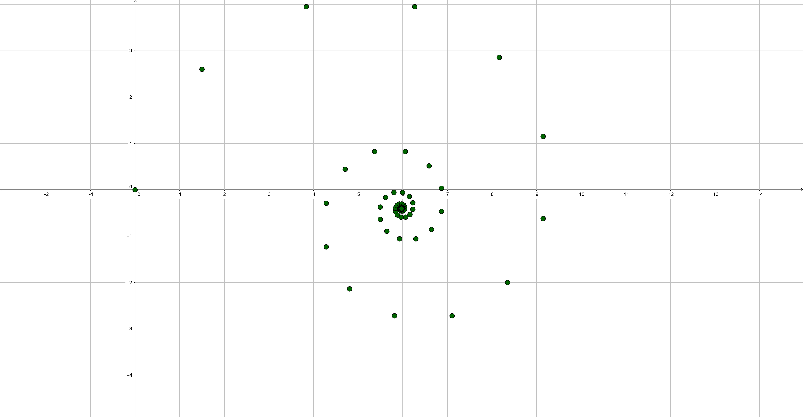

What is the limiting point for a linear spiral given an initial length $d$, diminishing factor $r$, and angle in radians $a$?

A spiral is generated by connecting a series of points. After the initial point at the origin, the subsequent point is a distance $d$ away at an angle of $a$ to the vertical. The next point is at a distance $dr$ from the second with an angle of $2a$ to the vertical. This process continues for each subsequent point, hence the $k$th segment has a length of $dr^k$ and an angle to the vertical of $(k+1)a$ where $k\in \mathbb{Z}\cup k\geq0$.

The x and y coordinates of each point rely on the positions of the previous points. Hence, an expression for the coordinates can be developed using a sum. The x-coordinate of a point is given by the expression $\sum_{k=0}^{n}d(r)^ksin((k+1)a)$ and the y-coordinate by the expression $\sum_{k=0}^{n}d(r)^kcos((k+1)a)$ where $n\in \mathbb{Z}\cup n\geq0$. If $|r|<1$, then the limiting point of the sum can be found by determining the value of each sum as $n$ approaches infinity.

Since $e^{ia}=cos(a)+isin(a)$, $cos(a) = Re(e^{ia})$ and $sin(a) = Im(e^{ia})$.
Hence, $\sum_{k=0}^{\infty}d(r)^kcos((k+1)a)=Re(\sum_{k=0}^{\infty}d(r)^ke^{i(k+1)a})$ and
$\sum_{k=0}^{\infty}d(r)^ksin((k+1)a)=Im(\sum_{k=0}^{\infty}d(r)^ke^{i(k+1)a})$.
For the sake of convenience the sum will be written solely as $\sum_{k=0}^{\infty}de^{ia}(re^{ia})^k$ until a later step.
As this is a converging geometric series, the sum is equal to the expression $\frac{de^{ia}}{1-re^{ia}}$.
Which, according to the earlier substitution, is equal to $\frac{d(cosa+isina)}{1-rcosa-irsina}$.
The denomenator can then be rationalized: $\frac{d(cosa+isina)}{1-rcosa-irsina}\cdot\frac{1-rcosa+irsina}{1-rcosa+irsina}$.
When expanded: $\frac{d[(cosa)(1-rcosa)+(cosa)(irsina)+(isina)(1-rcosa)-rsin^2a]}{(1-rcosa)^2+r^2sin^2a}$.
When simplified: $\frac{d(cosa+isina-r)}{1-2rcosa+r^2}$.
Therefore, the limiting x-coordinate is the imaginary component $\frac{dsina}{1-rcosa+r^2}$.
and the limiting y-coordinate is the real component $\frac{d(cosa-r)}{1-rcosa+r^2}$.